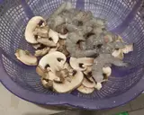

Resep Spaghetti Aglio Olio
Bahan-bahan :
- 100 gr Spaghetti
- 6-8 ekor Udang
- 3-5 biji Jamur Champignon
- 3-5 sdm Olive Oil
- 3 siung Bawang Putih
- 2 biji Cabe Rawit
- Daun Parsley/Seledri
- Oregano
- Garam
- Kaldu Bubuk
- Lada Bubuk
- Keju Cheddar (Sesuai selera)
Langkah-langkah :
- Rebus Spaghetti ke dalam air, beri sedikit garam.
- Cincang bawang putih, cabe, dan daun parsley/seledri.
- Iris jamur, kupas udang, kemudian cuci bersih keduanya.

- Panaskan olive oil, kemudian masukkan bawang putih, tumis sampai harum.
- Masukkan cabe, udang, dan jamur. Tumis sampai udang berwarna kemerahan.
- Kemudian masukkan spaghetti yang telah direbus, garam, kaldu bubuk, oregano, dan lada secukupnya. Cicipi rasanya, kemudian taburkan daun parsley/seledri sebelum diangkat.
- Setelah selesai taruh diatas piring, kemudian beri taburan keju sesuai selera, dan Spaghetti Aglio Olio siap dinikmati